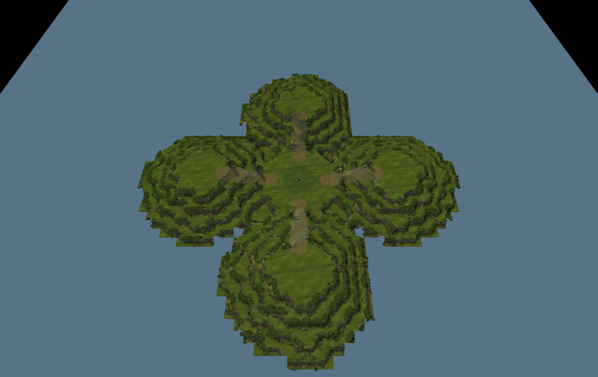
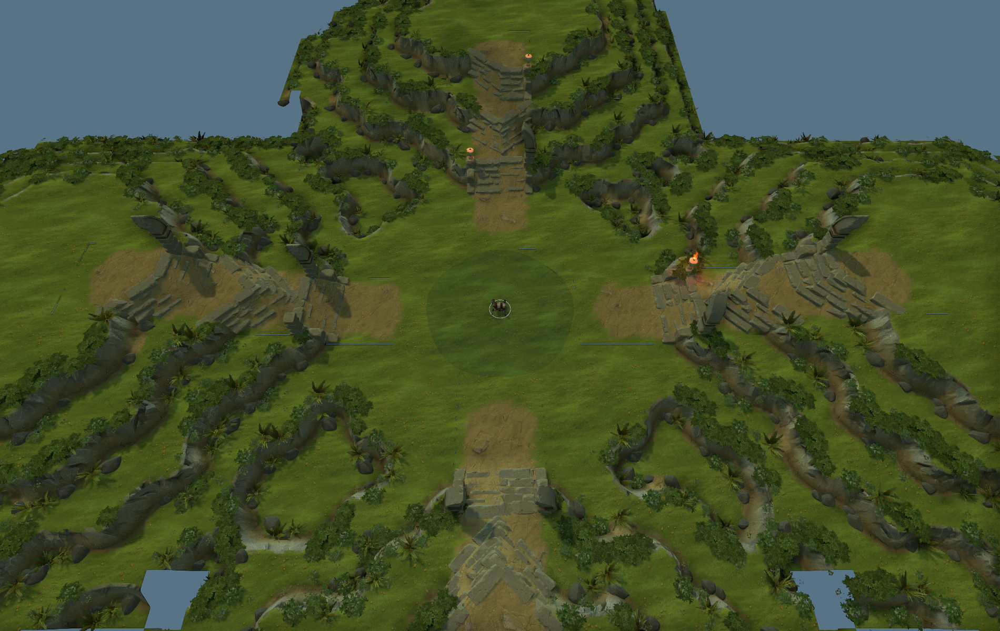
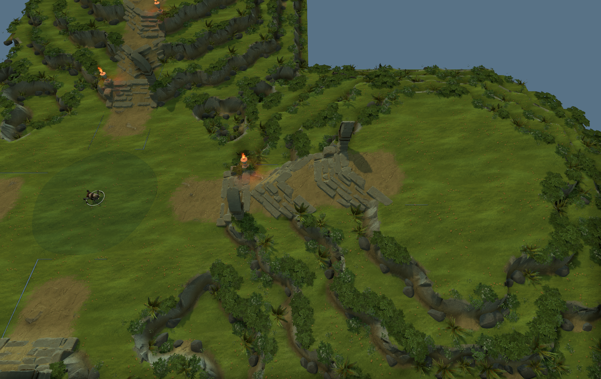
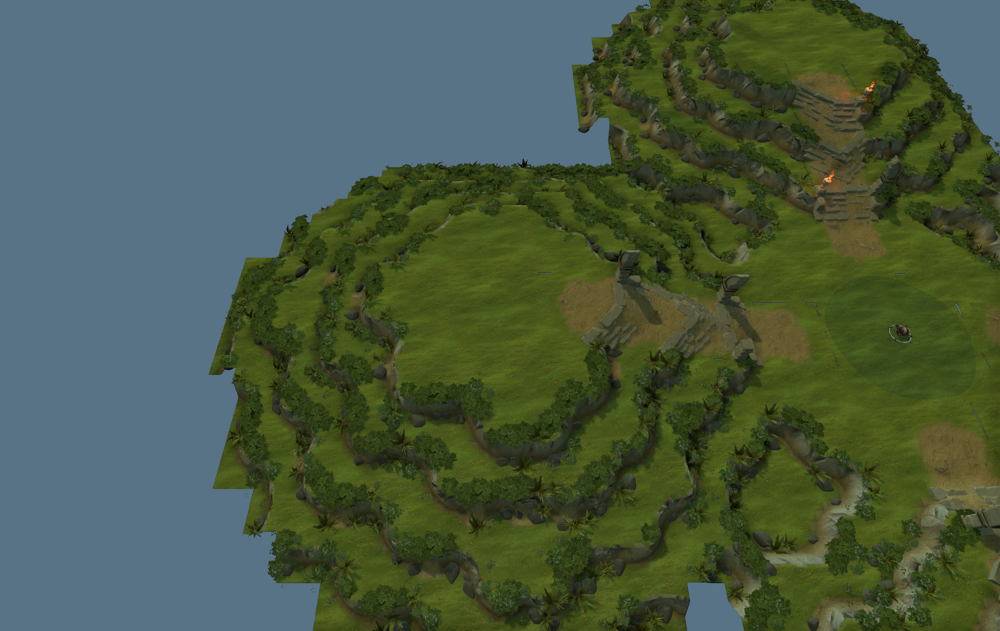

盆地 · 官方地形首版
本轮先看地形：中央低盆地、四条窄入口、四个高处场地。可活动地面、崖边和阶梯使用官方天辉地形块；水面独立铺在可通行地床上。草土统一打底，四季主题和装饰暂未细化。
独立地图：survival_basin_native.vmap。原有 review / edit 地图保留。打开新地图后可继续使用 Hammer 地形工具编辑。
检查结果：地图编译通过；中央到四座场地的双向寻路通过。外围裁切与背景仍是地形预览状态，本轮请重点判断高差、场地大小和阶梯衔接。

整体鸟瞰 · 点击查看原图
中央盆地与浅水出怪点 · 点击查看原图
官方阶梯与坡口 · 点击查看原图
高处场地与崖边 · 点击查看原图